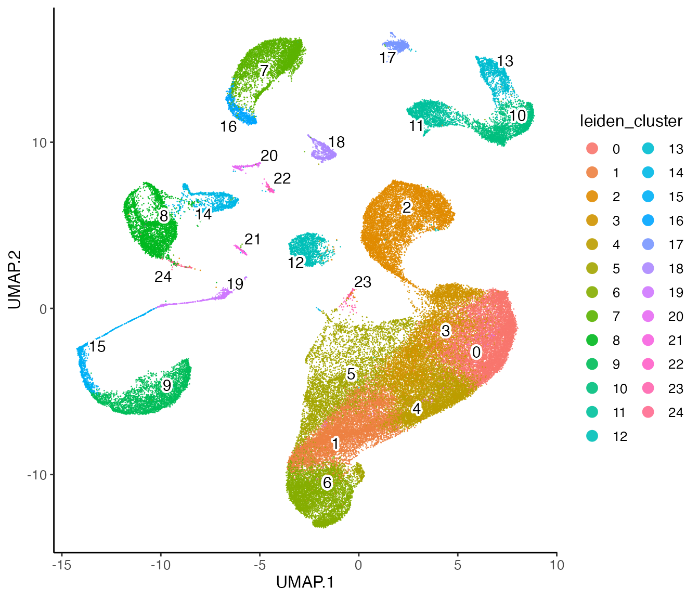
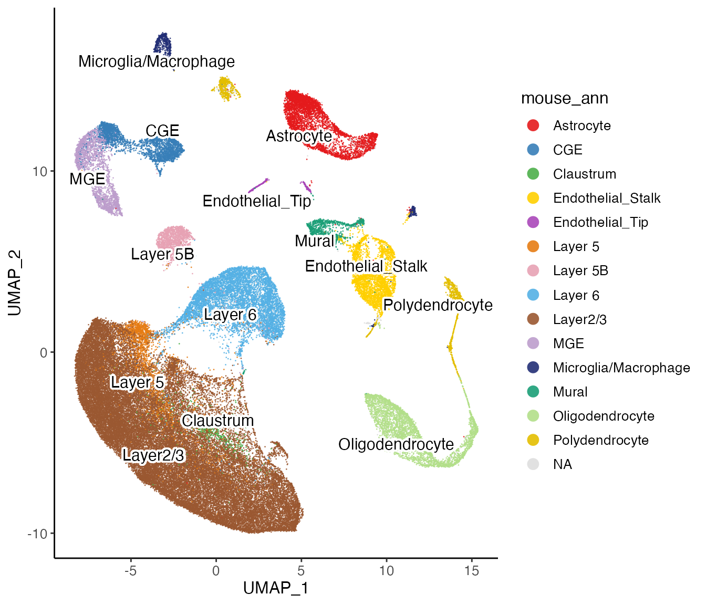
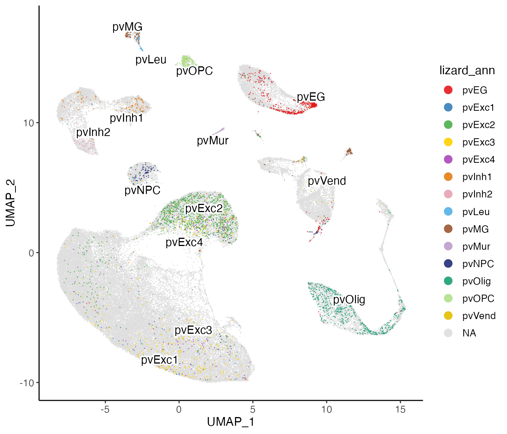

Cross-Species Analysis with UINMF
April Kriebel and Joshua Welch
12/6/2021
Source:vignettes/articles/cross_species_vig.Rmd
cross_species_vig.RmdIn this vignette, we demonstrate how to integrate dataset from different species.
Step 1: Load the data
1. Load data and create liger object
For this tutorial, we will use two datasets, which can all be downloaded at https://www.dropbox.com/sh/y9kjoum8u469nj1/AADik2b2-Qo3os2QSWXdIAbna?dl=0 .
- The scRNA mouse dataset (Drop_mouse.RDS) is 28,366 genes by 71,639 cells.
- The scRNA lizard dataset (RNA_lizard.RDS) is 15,345 genes by 4,202 cells.
The input raw count matrices are presented in dgCMatrix class
objects, which is a common form of sparse matrix. Users can then create
a liger object with the two datasets. A named list is
required for submitting the datasets to the object creator.
Step 2: Preprocessing and normalization
2. Normalization
Liger simply normalizes the matrices by library size, without multiplying a scale factor or applying “log1p” transformation.
lig <- normalize(lig)3. Select variable genes
For cross-species analysis, we select shared, homologous genes
between the two species, as well as unshared, non-homologous genes from
the lizard dataset. The default setting of selectGenes()
function selects for homologous genes shared between all datasets. To
enable selection of unshared genes, users need to specify the name(s) of
dataset(s) where unshared genes should be chosen from to
useUnsharedDatasets.
lig <- selectGenes(lig, var.thres = 0.3, useUnsharedDatasets = "lizard", unsharedThresh = 0.3)## Wed Dec 20 16:04:31 2023 ... Selecting variable features for dataset: mouse## Wed Dec 20 16:04:34 2023 ...... 1683 features selected out of 12334 shared features## Wed Dec 20 16:04:34 2023 ... Selecting variable features for dataset: lizard## Wed Dec 20 16:04:34 2023 ...... 612 features selected out of 12334 shared features## Wed Dec 20 16:04:34 2023 ...... 166 features selected out of 3008 unshared features## Wed Dec 20 16:04:34 2023 ... Finally 1976 shared variable features selected.4. Scale not center
Then we scale the dataset. Three new matrices will be created under the hook, two containing the shared variable features for both datasets, and one for the unshared variable features of lizard data. Note the Liger does not center the scaled data because iNMF/UINMF methods require non-negative input.
lig <- scaleNotCenter(lig)Step 3: Joint Matrix Factorization
5. Mosaic integrative NMF
Unshared Integrative Non-negative Matrix Factorization (UINMF) can be
applied with runIntegration(..., method = "UINMF"). A
standalone function runUINMF() is also provided with more
detailed documentation and initialization setup. This step produces
factor gene loading matrices of the shared genes: \(W\) for shared information across datasets,
and \(V\) for dataset specific
information. Specific to UINMF method, additional factor gene loading
matrix of unshared genes, \(U\) is also
produced. \(H\) matrices, the cell
factor loading matrices are produced for each dataset and can be
interpreted as load rank representation of the cells.
lig <- runIntegration(lig, k = 30, method = "UINMF")Step 4: Quantile Normalization and Joint Clustering
6. Quantile normalization
The default reference dataset for quantile normalization is the largest dataset, but the user should select the higher quality dataset as the reference dataset, even if it is a smaller dataset. In this case, the mouse dataset is considered higher quality than the lizard dataset, so we set the mouse dataset to be the reference dataset.
After this step, the low-rank cell factor loading matrices, \(H\), are aligned and ready for cluster definition.
lig <- quantileNorm(lig, reference = "mouse")7. Leiden clustering
With the aligned cell factor loading information, we next apply Leiden community detection algorithm to identify cell clusters.
lig <- runCluster(lig, nNeighbors = 30, resolution = 0.6)Step 5: Visualization
8. Dimensionality reduction
We create a UMAP with the quantile normalized cell factor loading.
lig <- runUMAP(lig, nNeighbors = 30, minDist = 0.3)9. Plot UMAP
Next, we can visualize our returned factorized object by dataset to check the integration between datasets, and also the cluster labeling on the global population.
plotDatasetDimRed(lig)
plotClusterDimRed(lig, legendNCol = 2)
We can also use the datasets’ original annotations to check the correspondence between the cell types of the two species. The annotations can be downloaded at https://www.dropbox.com/sh/y9kjoum8u469nj1/AADik2b2-Qo3os2QSWXdIAbna?dl=0
mouse_annies = readRDS("cross_species_vignette_data/Dropviz_general_annotations.RDS")
lizard_annies = readRDS("cross_species_vignette_data/lizard_labels.RDS")cellMeta()<- method has the feature for partial
insertion implemented and is great for adding dataset specific metadata
to a new variable. If you are unsure about the order between given
variable and the cells in the object, argument cellIdx can
be used for precise locating. Users might use different strategies when
creating the index depending on different situation.
mouse_id <- paste0("mouse_", names(mouse_annies))
cellMeta(lig, "mouse_ann", cellIdx = mouse_id) <- factor(mouse_annies)
lizard_id <- paste0("lizard_", names(lizard_annies))
cellMeta(lig, "lizard_ann", cellIdx = lizard_id) <- factor(lizard_annies)
plotClusterDimRed(lig, useCluster = "mouse_ann", legendNCol = 1)
plotClusterDimRed(lig, useCluster = "lizard_ann", legendNCol = 1)